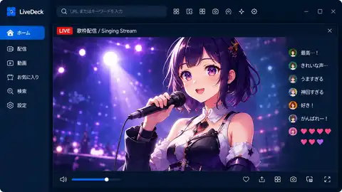
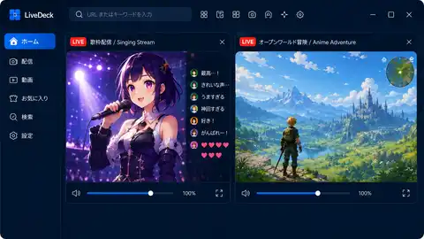
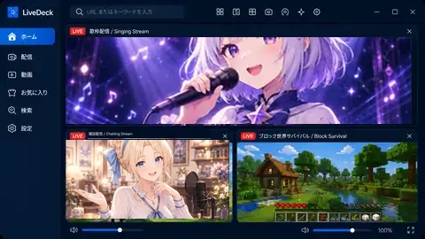
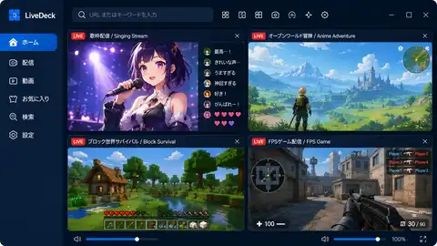
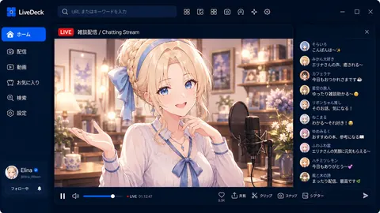

▦
複数画面をまとめて表示
複数の配信や動画を1つのウィンドウに配置。ゲーム、歌、雑談など、同時に追いたい配信をひと目で見渡せます。
Multi Live / Video Viewer
好きな配信や動画を自由に並べて、まとめて視聴。ブラウザを何枚も開かず、見たい配信をすっきり見やすく楽しめます。

見たい配信を追加したら、あとはLiveDeckの中で並べて調整。サービスごとのブラウザ画面を行き来する手間を減らします。
複数の配信や動画を1つのウィンドウに配置。ゲーム、歌、雑談など、同時に追いたい配信をひと目で見渡せます。
自動配置に加えて、見たい枠数や画面の使い方に合わせてレイアウトを選択。必要なら配信枠を分離して使うこともできます。
よく見る配信先を保存して、次回すぐに開けます。サービスをまたいだお気に入りや最近見た配信もまとめて扱えます。
Webページの表示倍率や音量を配信枠ごとに調整。小さい枠でも見たい部分を読みやすくしたり、聞きたい配信だけ音を残したりできます。
対応する配信ではコメント表示を補助。配信画面を見ながら、必要なコメント周りの操作へすぐ移れます。
対応サービスではLiveDeck上部の検索から目的の配信へ。枠ごとにサービスを選び、別の配信へ切り替えられます。
1枠から4枠まで、見たい配信の数に合わせて表示を切り替え。集中して1つを見るときも、気になる配信をまとめて追いたいときも、実際の見え方をイメージしやすい形で紹介します。

Lyraの歌枠のように、1つの配信を大きく表示してじっくり視聴。コメントや画面を追いながら、ひとつの配信に集中したいときに便利です。

気になる2つの配信を左右に並べて同時に視聴。推しの配信を見ながら、別の配信も追いたいときに役立ちます。

よく見たい配信を大きめに、ほかの2配信をサブ表示。メインを見失わずに、他の配信の様子もまとめて確認できます。

4つの配信を一覧で表示して、まとめて視聴。複数人の配信を追いたいときや、いろいろ見比べたいときにぴったりです。
画面例の配信映像は紹介用イメージです。実際の表示内容は各配信サービスや視聴ページによって異なります。
1つを大きく見るときも、複数を並べるときも、LiveDeckは配信内容を選びません。Elinaの雑談枠のように、コメントを眺めながらゆったり見る使い方にも自然に馴染みます。

普段の配信視聴を大きく変えず、ブラウザで開いていたページをLiveDeckの枠にまとめる感覚で使えます。
見たいサービスを選んで配信を開きます。
自動レイアウトや表示倍率で画面を整えます。
よく見る配信先は次回すぐ開けるよう保存できます。
サービスごとに検索方法やWeb画面の仕様は異なりますが、LiveDeckでは配信枠としてまとめて表示できます。
各サービスの名称・商標は各権利者に帰属します。LiveDeckは各サービスの公式アプリではありません。